Техника пайки
Пайка - это соединение металлов с помощью другого, более легкоплавкого металла. В электронике, как правило, используют припой, содержащий 60% олова и 40% свинца. Этот сплав плавится уже при 180 °C. Современные припои, используемые при пайке электронных схем, выпускаются в виде тонких трубочек, заполненных специальной смолой (колофонием), выполняющей функции флюса. Нагретый припой создает внутреннее соединение с такими металлами, как медь, латунь, серебро и т.д., если выполнены следующие условия:
- Поверхности подлежащих пайке деталей должны быть зачищены, то есть с них необходимо удалить образовавшиеся с течением времени пленки окислов.
- Деталь в месте пайки необходимо нагреть до температуры, превышающей температуру плавления припоя. Определенные трудности при этом возникают в случае болших поверхностей с хорошей теплопроводностью, поскольку мощности паяльника может не хватить для ее нагрева.
- Во время процесса пайки место пайки необходимо защитить от воздействия кислорода воздуха. Эту задачу выполняет флюс (колофоний), образующий защитную пленку над метом пайки. Флюс содержится в припое в виде тонкого сердечника. При расплавлении припоя он распределяется по поверхности жидкого металла.
Лужение — процесс покрытия металлических поверхностей оловом или специальным сплавом на оловянной основе (полудой). Лужение производится для защиты металла от коррозии или для подготовки к пайке (лужёная поверхность лучше смачивается припоем).
Применение свинцово-оловянных припоев только тогда может дать хорошие результаты, когда работающий правильно представляет процесс пайки и знает основные правила работы.
В зависимости от назначения спаиваемых деталей или изделий швы пайки подразделяются на :
- прочные швы (должны выдерживать механические нагрузки);
- плотные швы (не должны пропускать жидкостей или газов, находящихся под слабым давлением);
- прочные и плотные швы (должны выдерживать давление жидкостей и газов, находящихся под большим давлением).
Припой в процессе паяния в результате смачивания образует с поверхностью спаиваемой детали зону промежуточного сплава, причем качество пайки в таком случае при наличии чистых металлических поверхностей будет зависеть от скорости растворения данного металла в припое: чем скорость растворения больше, тем качество пайки лучше. Иначе говоря, качество паяния зависит от скорости диффузии.
Увеличению степени диффузии способствуют:
наличие чистых металлических поверхностей спаиваемых деталей. При окисленной поверхности степень диффузии припоя значительно уменьшается или полностью отсутствует;
предотвращение окисления расплавленного припоя в процессе пайки, для чего применяются соответствующие паяльные флюсы;
пайка при температуре, близкой к температуре плавления спаиваемой детали;
медленное охлаждение после пайки (в горячем песке, горячих углях).
Замечено, что при пайки деталей, покрытых гальваническим путем другими металлами, шов не получается такой прочности, как при спаивании чистых металлов или сплавов. Это наблюдается при всех гальванических покрытиях (никелем, хромом, оловом, кадмием). Наоборот, пайка по горячему лужению оловом или оловянно-свинцовыми сплавами дает всегда более прочное соединение, чем по чистому металлу. Этот пример подтверждает влияние степени диффузии на прочность шва при пайке.
Пайка является причиной наибольшего числа затруднений, которые испытывают как начинающие радиолюбители. Она требует величайшей аккуратности. Всего лишь один плохо припаянный контакт — и вся схема будет работать неправильно или неустойчиво. Процесс же поиска и устранения неисправности может оказаться очень длительным из-за необходимости перепайки всех соединений. Всего этого легко избежать — просто не надо жалеть времени, чтобы все пайки выполнять аккуратно и придерживаться следующих правил:
-
Все проводники, которые должны быть спаяны,
следует тщательно осмотреть, чтобы убедиться, что на них нет масел,
загрязнения или остатков изоляции. Посторонние частицы должны тщательно
удаляться, пока поверхность не станет чистой и блестящей.
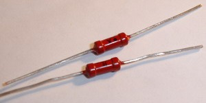
Рис. 1 - Проводники очищены
- Залудите соединяемые проводники.
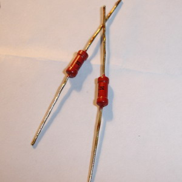
Рис. 2 - Залуженные проводники
- Проводники должны быть крепко скручены друг с другом, чтобы получить
так называемое механическое соединение. Убедитесь в прочности
механического соединения, осторожно подергивая выводы компонентов. Если
они неподвижны, значит это соединение существует.
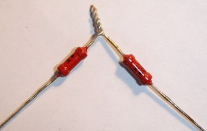
Рис. 3 - Соединение проводников скруткой
- Приложите паяльник к соединению, а не к припою. Это, пожалуй, наиболее важный момент, и если его выполнить неверно, то получится дефектный спай с «холодной» пайкой. «Холодная» пайка — это результат того, что припой наносится на место соединения, прежде чем выводы компонентов или проводники хорошо прогреты жалом паяльника. Только после того как соединение будет прогрето паяльником, на него помещается капля припоя, который может свободно растечься по проводникам. Если соединение нагреется до той же температуры, что и паяльник, то припой расплавится и заполнит все полости в «скрутке» проводов. Обязательно используйте небольшую каплю припоя, так как слишком большое его количество также вызовет образование «холодного» спая. Это связано с тем, что слишком большая навеска припоя полностью не расплавится.
- Когда припой растечется по спаиваемому соединению, уберите паяльник и
подождите 20 с, пока припой остынет. Очень важно, чтобы в это время
спаиваемые проводники не двигались, так как это может привести к
растрескиванию припоя и нарушению контакта. Когда пройдет 20 с,
осторожно подергайте выводы, чтобы убедиться, что в только что
сделанном соединении отсутствует механическая подвижность. Теперь
внимательно осмотрите соединение: нет ли в нем признаков «холодной»
пайки, таких, как тусклая поверхность или нерасплавившиеся кусочки
припоя. Хорошо пропаянное соединение должно быть ровным и блестящим.
Если все в порядке, можете приступать к пайке следующего соединения.
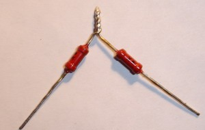
Рис. 4 - Хорошо пропаянное соединение
Некоторые компоненты (полупроводниковые приборы) могут быть повреждены из-за перегрева даже маломощным паяльником, если их нагреть слишком сильно. При пайке важно действовать быстро, чтобы избежать нагрева компонентов выше допустимой температуры.
Технологический процесс пайки
Для получения наилучших результатов технологический процесс паяния должен состоять из следующих операций:
Очистку спаиваемых поверхностей от окислов производят напильником или шабером так, чтобы промежуток между двумя поверхностями был везде одинаков и не превышал 0,1—0,3 мм. Такой небольшой промежуток необходим для образования капиллярных сил, которые способствуют засасыванию припоя на значительную глубину от кромки. Если спаиваемые поверхности имеют следы жира или масла, то их обрабатывают горячим раствором щелочи. Обычно берут 10 %-ный раствор соды. Если механически очистить детали по какой-либо причине нельзя, то применяют травление деталей в кислотах. Обычно берут 10 %-ный раствор серной кислоты для меди и ее сплавов, а для деталей из черных металлов — 10 %-ный раствор соляной кислоты, причем раствор должен быть подогрет до 50—70 °С.
После очистки и подготовки деталей места спайки должны быть облужены. Предварительное лужение имеет весьма важное значение, так как а этом случае достигаются повышенные прочность и плотность спая. В случае невозможности предварительного лужения паяние ведут и по чистой поверхности, но результаты, конечно, будут более низкими.
Для предварительного лужения применяется тот же припой, какой применяется и для последующего паяния. Если, например, паяние производится припоем марки ПОС 30, то и предварительное лужение должно быть осуществлено тем же припоем.
Перед пайкой детали скрепляют, чтобы места соединений не расходились при небольших механических воздействиях, например при наложении паяльника. Самый простой способ скрепления — обвязка мягкой проволокой, лучше железной, но, конечно, не исключены и другие способы, например сжатие струбцинами, загиб шва с образованием «замка».
Метод пайки в значительной мере зависит от типа применяемого припоя. Наиболее характерные случаи пайки:
- паяльником с применением мягких припоев;
- ручной паяльной лампой с применением обычно твердых припоев;
- электрическое паяние (место спая служит сопротивлением, через сопротивление пропускается ток низкого напряжения).
При пайке паяльником обычно применяют припои, температура плавления которых не выше точки плавления свинца (327°С). Такое паяние производят тогда, когда детали не подвергаются большим нагрузкам или требуют в дальнейшем распаивания. Если детали подвергаются в процессе работы нагреванию до высоких температур, паяние паяльником с применением мягких припоев исключается.
Подготовку паяльника для работы производят одновременно с подготовкой деталей. Паяльник слегка проковывают (частично для удаления нагара и окислов), зажимают в тиски и опиливают так, чтобы рабочая часть его была полукруглой. Если опиливать паяльник без предварительной проковки, то он скоро изнашивается. Конец паяльника делают полукруглым потому, что в этом случае он не так быстро охлаждается, как острый, лучше прогревает места спайки и равномернее разъедается жидким припоем.
После механической подготовки паяльник облуживают, для чего нагревают его не выше 400 °С, конец паяльника опускают в водный раствор хлористого цинка, после чего горячим паяльником трут о кусок припоя до тех пор, пока вся рабочая часть не покроется слоем полуды.
При работе паяльник должен иметь температуру, удовлетворяющую следующему требованию: если паяльник приложить рабочим местом к прутку припоя, часть припоя, прилегающая к паяльнику, должна расплавиться через 0,5—1 с. Во время работы температура паяльника должна быть такова, чтобы полуда или капли припоя, приставшие к паяльнику, были в жидком состоянии.
Более удобный способ облуживания паяльника заключается в следующем: в куске нашатыря (хлористого аммония) делают небольшие углубления и туда кладут кусочки припоя. Проводя горячим паяльником вперед и назад по твердому нашатырю, одновременно касаются и припоя. Таким образом паяльник облуживается быстрее.
Если нагретым паяльником коснуться шва и одновременно к шву подложить кусок припоя в виде прутка, ленты или проволоки, то припой расплавится и проникнет в шов. Излишек припоя разглаживают по шву паяльником. Припой также наносят на шов паяльником, так как к паяльнику всегда прилипают капли припоя, и если концом паяльника проводить по шву, жидкий припой всасывается в шов. Чтобы новые капли припоя перешли на паяльник, его снова отнимают от шва и прикладывают к куску припоя.
Лужение
Технологический процесс лужения состоит из следующих операций:
- очистки поверхности от посторонних веществ металлической щеткой, песком, известью или наждачной бумагой;
- обезжиривания бензином или горячим водным раствором соды или едкого натра;
- промывки в воде;
- химической чистки от окислов травления в кислотах;
- покрытия флюсами (хлористым цинком) кистью или погружением в водный раствор флюса;
- подогревания до температуры плавления полуды;
- лужения.
Лудят небольшие предметы паяльником, в случае надобности рабочей части паяльника придают формы облуживаемого предмета (например, полукруга при лужении трубок и проволоки).
Лужение больших предметов — баков и других емкостей — производят методом натирания. Для этого изделие смачивают раствором хлористого цинка и нагревают (на горне, углях и т. п.) до температуры плавления олова, после чего посыпают порошкообразной смесью олова с хлористым аммонием (нашатырем). Олово при этом плавится и, растертое паклей, образует на поверхности ровный слой полуды. После лужения остатки флюса отмывают горячей водой.
При лужении пищевой посуды старую полуду проверяют на содержание свинца, для чего часть луженой поверхности смачивают 10—15 %-ным раствором уксусной кислоты. Через 2—3 мин на это же место наносят 5—6 капель 8—10%-ного раствора йодистого калия, добавляют воды и растирают оба раствора по поверхности. При наличии свинца в полуде на смоченной поверхности появляется характерное желтое окрашивание раствора. В случае обнаружения свинца поверхность изделия протравливают смесью азотной и соляной кислот или же очищают пескоструйным аппаратом до полного удаления полуды.
Способы пайки некоторых металлов и сплавов
Свинец. При нагревании свинец настолько быстро окисляется, что пайка его приходится вести в восстановительной атмосфере, которая предохраняет спаиваемые места от окисления и дает возможность припою легко соединяться с основным металлом. Восстановительная атмосфера образуется в результате применения для нагревания горелки, в которую поступает водород и 'кислород воздуха, причем водород всегда должен быть в избытке. В качестве припоя применяют свинец.
Применение свинцово-оловянных припоев нежелательно, так как шов тогда начинает коррозировать в кислотах.
Цинк. Для паяния цинка применяют обычные свинцово-оловянные припои. Рекомендуем применять припой ПОС 30 в смеси с хлористым флюсом.
Если цинк чистый, то при пайке его обычно применяют насыщенный раствор хлористого цинка или разбавленную соляную кислоту. Если паяется загрязненный цинк или цинковый сплав, то при использовании в качестве флюса соляной кислоты в месте травления образуется черное отложение (поэтому рекомендуют применять соляную кислоту с хлористым аммонием).
Заметим, что двойные флюсы в большей степени предохраняют металл от коррозии, чем обыкновенный флюс. При пайке свинцово-оловянными припоями лучше применять флюс, содержащий хлористый аммоний и насыщенный раствор хлористого цинка, взятые в соотношении 1:5 (по массе). Для оловянно-кадмиевых припоев в качестве флюса рекомендуют брать едкий натр. При пайке цинковых сплавов, содержащих свыше 2 % алюминия (детали, изготовленные способом литья под давлением), применяют те же методы, что и при пайке алюминия или сплавов. В этом случае применяют припои оловянно-цинковые, а в качестве флюсов берут соляную кислоту, вазелин или стеарин. Иногда применяют флюс, состоящий из 85 % стеариновой кислоты и 15 % хлористого натрия.
Чугун. Чтобы запаять трещину или иной дефект в чугунной детали мягким припоем, производят тщательную механическую очистку места паяния и хорошо смачивают его соляной кислотой. Затем это место обрабатывают водным раствором хлористого цинка, посыпают порошком нашатыря (хлористого аммония) и подогревают паяльником или паяльной лампой. Нагревать место пайки надо до тех пор, пока не станет плавиться поднесенный к нему припой. Тогда натирают припоем место спайки и сейчас же протирают его порошком нашатыря, нанесенного на густую металлическую щетку или паклю. Эта операция —- предварительное лужение перед паянием. Пока деталь еще горячая, запаивают трещины или иные дефекты паяльником, перемещая его от одного конца трещины к другому. Если припой не проходит в трещину, надо острым зубилом снять с обоих краев ее небольшую фаску, вылудить это место и снова произвести пайку. Излишек припоя снимается шабером или напильником.
Припаивание металлов к стеклу, кварцу, фарфору. При припаивании металла к стеклу и другим подобным материалам необходимо на место паяния осадить гальваническим способом слой металла и далее производить паяние обычным способом.
Припаивание стеклянных изделий к металлу (например, при соединениях стеклянных трубок с металлическими фланцами и т. п.) производят так: предварительно поверхность стекла шлифуют наждачной бумагой, затем тряпкой в шероховатую поверхность втирается графит, и на это место осаждают медь в гальванической ванне. Далее производится паяние и вторичное осаждение меди (или никеля).
Кварц. Кварцевую деталь тщательно очищают и обезжиривают последовательной промывкой в азотной кислоте, щелочи и воде. На очищенную деталь наносят слой серебра с помощью двух растворов (содержание компонентов дано в граммах).
Раствор 1 (серебрильный)
- Вода 200
- Азотнокислое серебро 2
- Аммиак до растворения осадка
Раствор 2 (восстановительный)
- Вода 1000
- Азотнокислое серебро 10
- Сегнетова соль 3,3
- Сахар-рафинад 3,3
Растворы 1 и 2 сливают вместе и наносят на поверхность детали с таким расчетом, чтобы вся подлежащая серебрению площадь была покрыта раствором. Непосредственно перед серебрением деталь следует обработать в течение 1—2 мин. 1%-ным раствором хлористого олова и промыть дистиллированной водой. Процесс серебрения длится 20—30 мин до получения осадка золотистого оттенка. Посеребренную деталь ополаскивают и просушивают при 50—70 °С. После просушки на полученный слой серебра электролитически наращивают слой меди требуемой толщины из кислой медной ванны. Точно так же производят серебрение и меднение на фарфоре.
Алюминий. Для паяния алюминия на паяльник надевают рифленый наконечник (рабочая часть его пропилена трехгранным напильником). Насадку изготовляют из стали марки У-7 и закаливают, с тем чтобы зубцы не срабатывались. Насадку вытачивают токарном станке, и ее конец спиливают. Трубку насадки пропиливают ножовкой на четыре части, это создает пружинистость насадки, и она плотно вставляется в рабочую часть обычного паяльника. Диаметр отверстия в насадке высверливают в соответствии с диаметром рабочего конца паяльника.
Места спая тщательно очищают до блеска, на зубчики насадки берут расплавленную канифоль и наносят на спаиваемое место. Когда в процессе облуживания канифоль начнет покрывать алюминий, паяльник короткими движениями передвигают взад и вперед, и зубцы будут скоблить металл. Таким методом очищают всю поверхность места спая, после чего облуживают очищенные места. Затем приступают к паянию. Для этого берут на паяльник каплю олова, предварительно посыпанную канифолью, и подносят к облуженному месту. Если облуженное место шероховатое, то паяльником снимают эту шероховатость, которая представляет собой пористое олово, смешанное с частичками окиси алюминия, образующейся из-за недостатка флюса. Предварительно на место спая насыпают канифоль, берут на паяльник каплю олова и наносят на спаиваемый шов. Как только олово смочит место спая, паяльник снимают с металла. Затем паяние производят вторично, для этого место спая снова посыпают канифолью.
При пайке алюминия, особенно в процессе его лужения, паяльник следует хорошо разогреть и длительное время держать на одном месте и после прогрева металла медленно водить по спаиваемому шву.
Для паяния алюминиевых сплавов рекомендуются припои ПОС 50 и ПОС 90. Флюсом служит минеральное масло (особенно рекомендуется оружейное). Предварительно на спаиваемые швы наносят флюс и затем зачищают места пайки. Паяние ведут мощным, хорошо прогретым паяльником. Перед началом паяния металл следует хорошо прогреть. Для паяния алюминиевых сплавов выпускается и специальный припой П250А, он состоит из 80% олова и 20% цинка. Флюсом служит смесь йодида лития (2-З г) и олеиновой кислоты (20 г). Перед работой паяльник необходимо облудить указанным припоем, пользуясь канифолью. Спаиваемые поверхности очищают от остатков флюса марлевым тампоном, смоченным в ацетоне.
Пайка изделий с тонкими швами.
Для паяния таких изделий (например, цепочек, колец или иных ювелирных изделий) применяют специальный припой, состоящий из смеси равных частей — борной кислоты, цинка (тонкого цинка), меди, фосфора, которые замешивают на касторовом масле. В этот припой изделия окунают, и припой проникает в стык изделия. Затем изделия присыпают тальком для удаления лишнего припоя, оставшегося на поверхности изделия, после чего изделие интенсивно нагревают на газовой горелке с температурой 1000°С. При быстром нагревании припой дает микровспышку, при этом температура повышается до 1200 °С.
Пайка твердыми припоями. Для паяния изделий из меди и латуни, при пайке наиболее ответственных швов, применяют твердые припои, состоящие из сплава меди и цинка. К таким припоям относится латунь марки Л-63, которая содержит меди от 62 до 65 %, остальное цинк, а также припои с содержанием меди — 51 %, цинка — 44 и олова — 5%. Добавка олова придает припою пластичность и улучшает растекаемость по металлу. Температура плавления припоя Л-63—950 °С, припоя с оловом — 860 °С. Для паяния тонких изделий применяют припои в виде опилок, на одну часть припоя берут одну часть флюса — прокаленную буру. Пайка производят в струе пламени от паяльной лампы,
Паяемость
Какие металлы паяются?
- Отлично паяются: Олово (белая жесть), кадмий, палладий, золото, серебро, родий.
- Хорошо паяются: медь, бронза, латунь, свинец, нейзильбер, беррилиевая бронза.
- Удовлетворительно паяются: Углеродистые стали, низколегированные стали, цинк, никель.
- Плохо паяются: Алюминий, алюминиевая бронза, высоколегированная сталь, нержавеющая сталь.
- Очень плохо паяются (требуется промежуточное покрытие из паяемого металла): чугун, титан, хром, тантал, магний.
Лужение проводов
Вариант для медного жала
Ножом аккуратно надрезаем и снимаем изоляцию. Надрезать изоляцию, ставя нож перпендикулярно к проводу не рекомендуется – можно надрезать сами жилы провода, что при изгибах вызовет поломку жилы. Изоляцию лучше надрезать под углом к проводу – так же как затачивают карандаш. Можно использовать специальные клещи для съемки изоляции. Самый лучший вариант – снятие изоляции горячим предметом (не жалом! Оно покроется остатками сгоревшей изоляции и им будет плохо паять), для чего есть специальные приспособления.
После снятия изоляции посмотреть на жилы провода. Если жилы тёмного цвета, не блестят – на них толстая пленка окислов которую нужно снять механически. Если жилы блестят медным или серебристым блеском – скручиваем их.
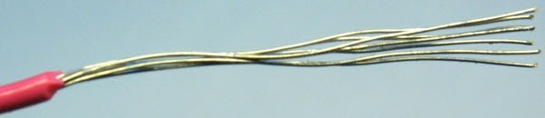
Рис. 6 - С провода снята изоляция. Жилы блестят.
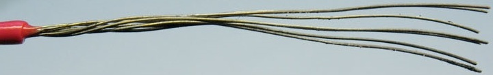
Рис. 7 - С провода снята изоляция. Жилы темного цвета без блеска – требуется механически их зачистить от окислов.
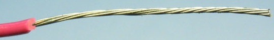
Рис. 8 - Жилы скручены, готовы к облуживанию
Набираем на жало немного припоя и окунаем в канифоль. Канифоль при этом расплавится. Быстро, пока не выгорела канифоль на жале, проводим жалом по проводу. Если всё сделано правильно то припой растечется по скрученным жилам. Если припой не смачивает жилы то нужно их зачистить и/или предварительно покрыть жидким флюсом, например ЛТИ-120.
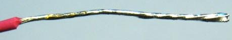
Рис. 9 - Хорошо облуженный провод. Припой затек во все пространство между жилами
Вариант для необгораемого жала
Зачищаем провод также как и в варианте для медного жала.
Так как к необгораемому жалу припой не пристает то его необходимо подавать в момент пайки виде проволочки. Держа паяльник в правой руке, проводим жалом вдоль провода (тепло должно передаваться жилам, иначе припой их не смочит) одновременно подавая левой рукой проволочку припоя. Если необходимо – можно предварительно покрыть жилы жидким флюсом.
Пайка проводов
Кладем их параллельно друг другу на длину не менее 15-20 диаметров (это обеспечит механическую прочность соединения). Иногда провода перед пайкой соединяют механически – скручивают. Встык паять нельзя – прочность соединения крайне низкая. Нужно паять внахлест.
Снова покрываем поверхность флюсом. Берем немного припоя и просто прогреваем соединенные провода. При этом важно, чтобы во время процесса и некоторое время после того, как убрали паяльник (пока припой не остынет), они не смещались друг относительно друга.
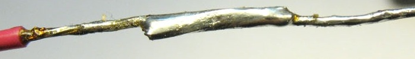
Рис. 9 - Хорошая пайка. Провода соеденены внахлест. Поверхность соединения гладкая и блестящая
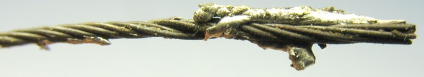
Рис. 10 - Брак – нет смачивания припоем. Причины: недостаточное количество флюса, слишком толстая пленка окислов на проводе
Рис. 11 - Плохая пайка – поверхность припоя матовая и в окислах. Причины: недостаток флюса, смещение деталей во время пайки
Демонтаж пайки
Вариант для медного жала
Если провод или вывод не загнуты то достаточно разогреть припой и вытянуть провод. Если припоя слишком много и крепление не видно, то стряхнем с жала лишний припой (паяльниками с керамическими нагревателями стучать нельзя). И приложим к месту пайки. Часть припоя перетечет на жало. Далее аккуратно расшатываем соединение пока провод не отпаяется. Если расшатывание невозможно то придется использовать оловоотсос и оплетку. Разогреваем жалом припой, быстро накрываем место пайки носиком оловоотсоса и нажимаем на спуск (учитывайте отдачу оловоотсоса при работе с хрупкими вещами!) Так мы удалим большую часть припоя. Если необходимо еще удалить припой – то прикладываем к месту пайки оплетку и прижимаем жалом. Припой перетечет в оплетку.
Важно учитывать, что печатные платы долго греть нельзя – начнет отслаиваться фольга дорожек, неговоря о перегреве отпаиваемого элемента.
Вариант для необгораемого жала
Точно так же как и для медного, кроме возможности собрать лишний припой на жало.
Пайка печатных плат (вариант для медного жала)
Пайка радиодеталей в плату требует меньших усилий, чем соединение свободных проводов, так как отверстия в плате служат хорошим фиксатором припаиваемой детали .Перед пайкой радиодетали, ее следует подготовить. С помощью узких плоскогубцев согните выводы детали таким образом, чтобы они входили в отверстия платы. Полезно иметь специальное приспособление для гибки выводов деталей под определенные расстояния между монтажными отверстиями.
Концы выводов радиоэлементов при пайке печатных плат загибают для фиксации элемента на плате. Если предполагается демонтаж элемента – то загибать выводы нельзя, фиксируют другими способами.
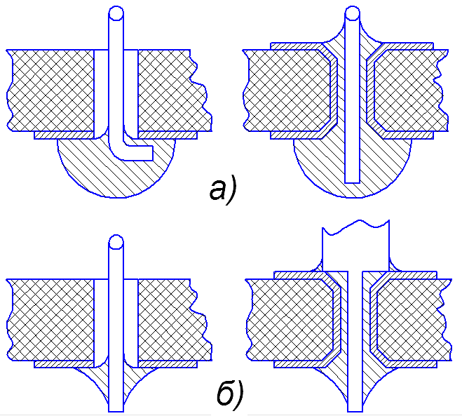
Рис. 7 - Типы монтажных соединений:
а - соединение с заливной формой пайки штырьковых выводов навесных элементов,
б - соединение со скелетной формой пайки штырьковых выводов
Вставьте деталь в отверстия на плате. При этом следите за правильным размещением (полярностью) детали, например, диодов или электролитических конденсаторов. После этого слегка разведите выводы с противоположной стороны платы, чтобы деталь не выпадала из своего места. Не следует разводить выводы слишком сильно.
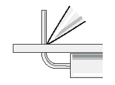
Рис. 7 - Положение жала паяльника относительно вывода элемента
Жало разогретого паяльника с припоем подносятся к месту пайки. Припой наносится на выводы детали и контакты платы тонким ровным слоем.
Разогретый паяльник жалом должен соприкасаться с самой платой и с контактами детали одновременно. Его нельзя отводить до тех пор, пока место пайки не покроется ровным слоем припоя. На это требуется не более секунды.
Не сдвигая деталь, жало паяльника быстро отведите от места пайки. Не сдвигая деталь, подождите несколько секунд, пока место пайки не остынет окончательно.
Теперь можно отрезать излишки выводов с помощью бокорезов. При этом следите за тем, чтобы не повредить место пайки.
Проверьте место пайки:
- качественное место пайки соединяет контактную площадку и вывод детали и имеет гладкую и блестящую поверхность.
- если место пайки имеет сферическую форму или имеет связь с соседними контактными площадками, разогрейте место пайки до расплавления припоя и удалите излишки припоя. На жале паяльника всегда остается небольшое количество припоя.
- если место пайки имеет матовую поверхность и выглядит исцарапанным, то говорят о "холодной пайке". Разогрейте место пайки до расплавления припоя и дайте ему остыть, не сдвигая детали. При необходимости добавьте немного припоя.
После этого можно удалить остатки флюса с платы с помощью подходящего растворителя. Эта операция не является обязательной - флюс может оставаться на плате. Он не мешает и ни в коем случае не влияет на функционирование схемы.
Пайка печатных плат (вариант для необгораемого жала)
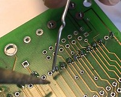 |
1. Припой и жало паяльника подводятся к монтажной точке одновременно. Жало паяльника должно касаться как обрабатываемого вывода, так и платы. |
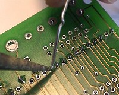 |
2. Положение жала паяльника не изменяется, пока припой не покроет равномерным слоем все место контакта. В зависимости от температуры паяльника это продолжается от полусекунды до секунды. За это время происходит достаточный нагрев места пайки. |
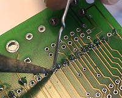 |
3. Теперь жало паяльника следует обвести по полукругу вокруг обрабатываемого контакта, одновременно перемещая припой во встречном направлении. Таким образом на место пайки наносится еще около 1 мм припоя. Место пайки нагрето настолько, что расплавившийся припой под действием сил поверхностного натяжения равномерно распределяется по всей контактной площадке. |
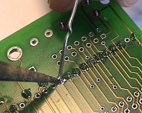 |
4. После того, как необходимое количество припоя нанесено на место пайки, можно отвести проволоку припоя от места пайки. |
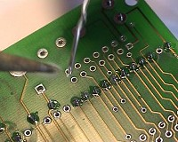 |
5. Быстро отведите жало паяльника от места пайки. Пока еще жидкий и покрытый тонким слоем флюса припой обретает свою окончательную форму и застывает. |
Если жало паяльника имеет оптимальную температуру, весь процесс продолжается не более одной секунды.
Типичные ошибки начинающих и способы их исправления
- Начинающие монтажники касаются места пайки только кончиком жала паяльника. При этом к месту пайки подводится недостаточно тепла. Опытный монтажник обладает чувством оптимальной теплопередачи. Он прикладывает жало паяльника таким образом, чтобы между ним и местом пайки образовалась как можно большая площадь контакта. Кроме того, он очень быстро вводит между жалом и деталью немного припоя в качестве теплопроводника.
- Начинающие монтажники расплавляет немного припоя и с некоторой задержкой подводит его к месту пайки. При этом часть флюса испаряется, припой не имеет защитного слоя и на нем образуется оксидная пленка. Профессионал, напротив, всегда касается места пайки одновременно паяльником и припоем. При этом место пайки обволакивается каплей чистого расплава еще до того, как флюс успеет испариться.
- Начинающие монтажники часто не уверены, не перегрето ли место припоя. Они слишком рано отводят жало паяльника от места пайки, затем вынуждены опять подводить его для подогрева, вновь отводят, и т.д. Результатом является серое место пайки с неровными границами, так как соединяемые детали были нагреты недостаточно сильно, а сам процесс длился слишком долго и колофоний успел испариться. Мастер, напротив, нагревает место пайки быстро и интенсивно и завершает процесс резко и окончательно.
Cоветы по пайке
Удаление старого припоя
Включите паяльник в розетку и смочите губку водой. Когда паяльник нагреется и начнет плавить припой, покройте жало паяльника припоем, а затем протрите его о влажную губку. При этом не держите жало слишком долго в контакте с губкой, чтобы не переохладить его. Протирая жало о губку, Вы удаляете с него остатки старого припоя. И в процессе работы для поддержания жала паяльника в чистоте время от времени протирайте его о губку.
Как паять алюминий
Покрываете место пайки тонким слоем канифоли и сразу же натираете таблеткой анальгина. Далее облуживаете поверхность припоем ПОС-50, прижимая к ней с небольшим усилием жало сильно нагретого паяльника. Ацетоном смываете остатки флюса. Снова осторожно прогреваете поверхность и смываете флюс. Теперь можете начать пайку обычным образом.
Чтобы жало паяльника не подгорало
Чтобы защитить стержень от обгорания, его нужно обмазать тонким слоем смеси силикатного клея и сухой минеральной краски (окись железа, цинка и магния). Перед включением паяльника покрытие нужно хорошо просушить, иначе клей вспенится и покрытие будет осыпаться.
Как зачистить проводники печатной платы
На ватный тампон наносят несколько капель технической соляной кислоты и протирают им поверхность фольги. Кислота хорошо удаляет слой окиси меди, практически не затрагивая металл. После этого плату надо промыть под проточной водой, сначала в горячей, а потом в холодной. Отверстия под выводы деталей лучше просверлить после этой обработки. При работе с кислотой необходимо соблюдать меры безопасности.